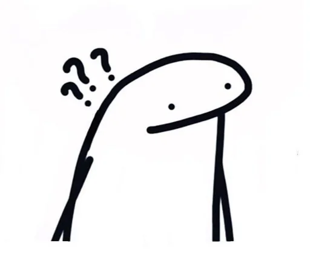
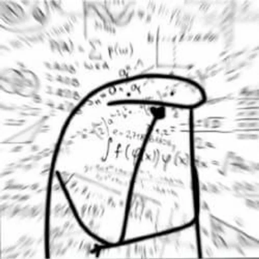
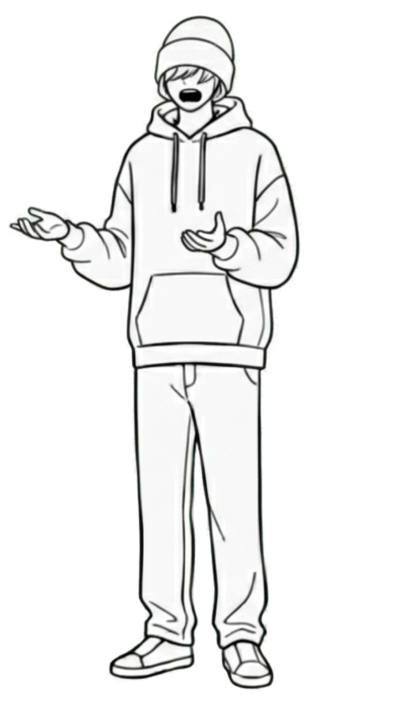
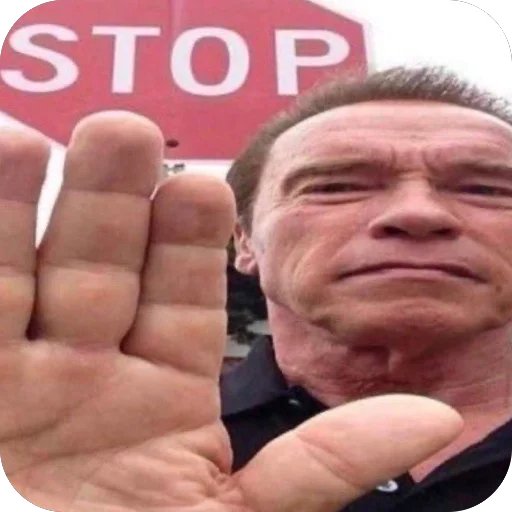
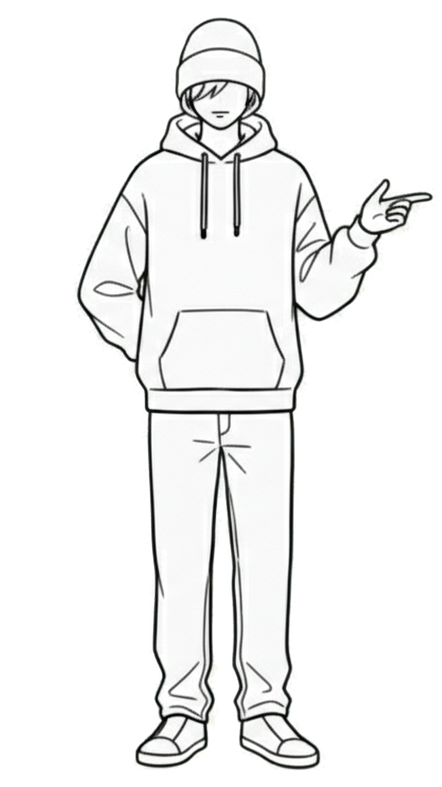
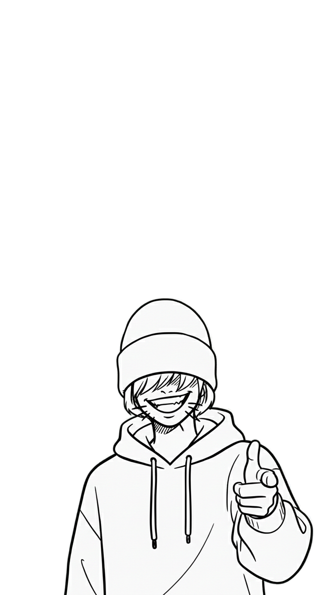

{ API }
</>
JSON · 200 OK
وش
يعني
API؟



فكرة بسيطة جداً


أنت (الطاولة)
المطبخ (الأكل)


ممنوع تدخل المطبخ!

النادل (الوسيط)
الطلب
الأكل

API
نفس النادل بين التطبيقات

تطبيق أول
API
أنظمة التطبيق

✖ ممنوع الدخول المباشر

طلب ➔ Request
⬅ الرد Response
S
Pay
متجر إلكتروني
سماعة احترافية
فاتورة #402
400 SAR
اختر وسيلة الدفع:
الدفع عبر تابي
4 دفعات بدون فوائد
tabby
تم الدفع بنجاح ✓

Tabby API Engine
معالجة الطلب
تفاصيل الفاتورة
400 SAR
تقسيم تلقائي على 4 دفعات:
100
Q1
100
Q2
100
Q3
100
Q4


تطبيق 1
تطبيق 2
جسر الـ API
خصوصية وأمان تام
تابعنا الآن ↗
لشروحات تقنية أكثر

